Bienvenidos a CIO HOY
La escuela no solo es un lugar para adquirir conocimiento sino también para vivir experiencias y construir recuerdos.
En esta revista buscamos enseñar estos recuerdos y dejar que las personas digan sus opiniones sobre lo que quieran.
Los invitamos a leer, participar y formar parte de este proyecto para crear una voz y conciencia.
– Equipo editorial.
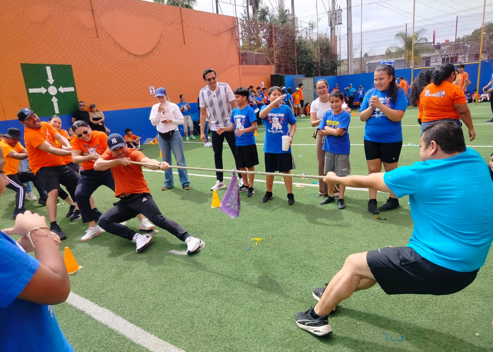
Historias que dejan huella
Bienvenidos fanáticos de las desgracias ajenas. Los alumnos de nuestra institución comparten sus anécdotas más memorables.
El Karma Me Golpeó la Cara
Hace dos años en segundo de secundaria me encontraba afuera del salón de física elemental con mi amiga Victoria, ambas estábamos aburridas cuando en el piso vimos una plata y una mochila abierta.
–¿Y si se la echamos a Octavio en la mochila?– me dijo emocionada y yo acepté. Nos paramos ansiosas, cuando de pronto patearon un balón de fútbol tan fuerte que rebotó en una pared y llegó a mi cara.
Finalmente mi maestro me llevó a enfermería.
–¿Puedes abrir más los ojos?–
–Soy de ojo chiquito, no puedo abrirlos más– respondí, haciendo reír al maestro.
Moralmente sí sentí el karma instantáneo.
La Pascualita
"El maniquí que le crecen las uñas"
Esta se sitúa en el estado de Chihuahua en la tienda de vestidos de novia llamada "La Popular". La leyenda se centra en Pascuala la dueña y su hija Pascualita, una mujer joven y bella.
Pascualita se comprometió con un hombre, pero falleció un día antes de su boda por la picadura de una araña venenosa, sin poder usar el gran vestido que su madre le había confeccionado.
Tras la muerte de la joven, llegó a la tienda un nuevo maniquí peculiarmente idéntico a Pascualita. La gente rumoreó que Pascuala había embalsamado el cadáver de su hija, lo cual siempre negó.
La leyenda cuenta que el maniquí mueve sus ojos por las noches, cambia de posición, le crecen las uñas y encaneció el pelo. Si quieres un matrimonio feliz debes comprar el vestido que exhibe.
Sport Day & Domingo Familiar
Este domingo 8 de marzo tuvo lugar el evento dedicado a los deportes y convivencia familiar. Los alumnos se separan en colores azul y naranja, compitiendo en juegos y actividades para ganar puntos.
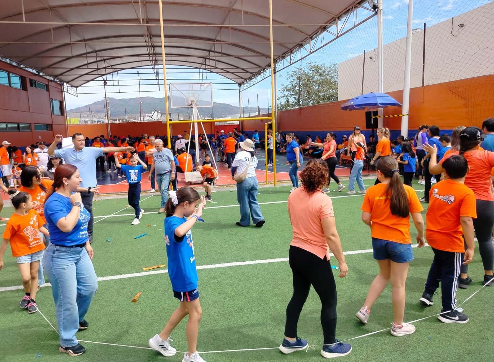
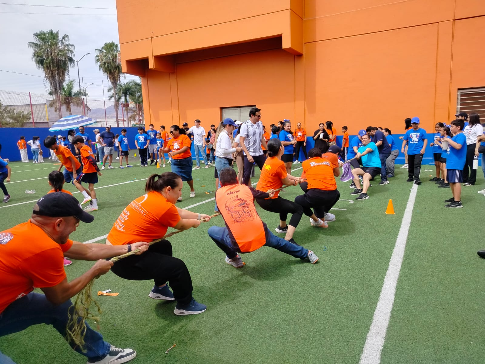
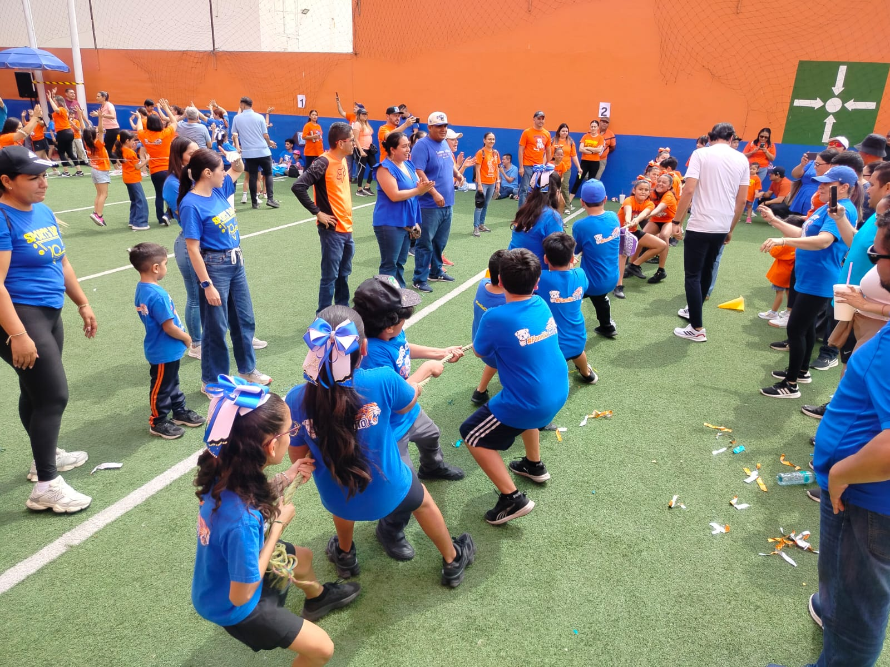
🏆 Resultados — Puntuación y Ganador
El color azul resultó campeón con tan solo 25 puntos de diferencia.
| Azules | Naranjas | |
|---|---|---|
| Puntos Totales | 1,635 | 1,610 |
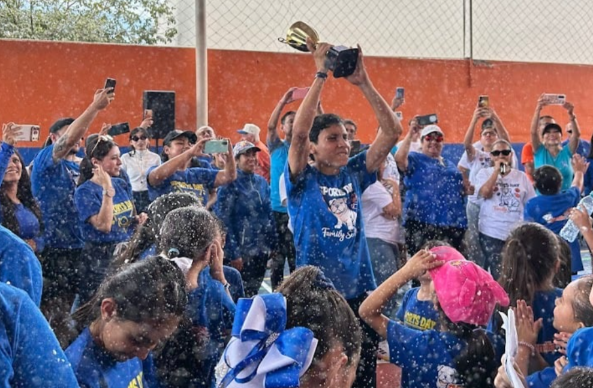
¿Cómo se la pasaron los alumnos este domingo familiar?
Este domingo aprovechamos la oportunidad de preguntarle al personal, familiares y estudiantes de la institución como se la estaban pasando en este evento deportivo, haciéndoles diversas preguntas (principalmente al inicio de la jornada) con el objetivo de saber que nos contaba el CIO.
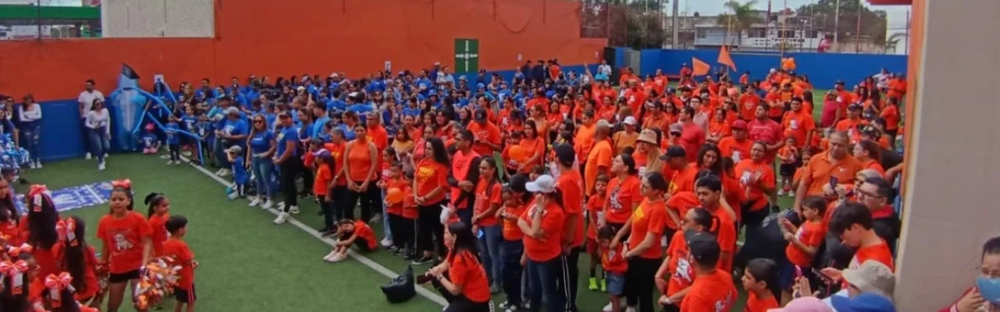
¿Qué expectativas tienes para hoy?
Ganar, divertirnos con las actividades y ver la competencia.
¿En qué quieren participar más?
Voleibol, fútbol y juegos de padres y madres.
Predicciones
8 azules – 8 naranjas.
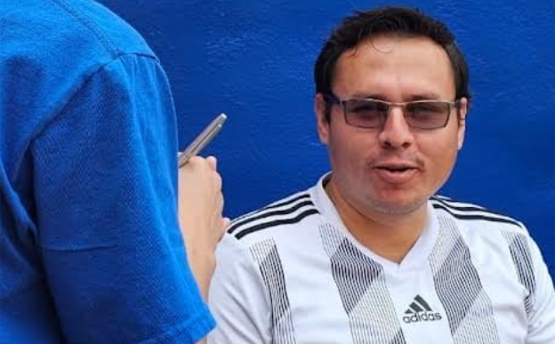
¿Qué equipo cree que vaya a ganar?
"Lo que yo he visto señor, es que hay más actitud en los naranjas."– Profesor Omar
"Azul, hay mayor participación, pero aún así creo que ambos tienen oportunidad de ganar."– Maestra Alejandra
"En base a los puntos actuales, va ganando el equipo azul."– Profesor Julio
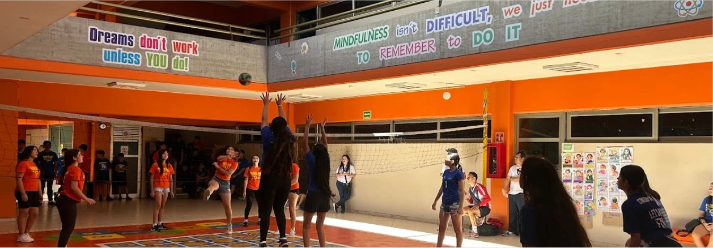
Lo más nuevo del mundo tecnológico
¡Nuevo sistema operativo de Google!
El sucesor de Chrome OS, llamado Aluminium OS, planea unificar Android y Chrome OS. Fecha planeada: finales de 2026. Será Android 16 o 17 adaptado para computadoras con compatibilidad total para apps Android.
Chrome OS continuará, enfocado en entornos educativos y empresariales.
Editado por: Omar Galaviz
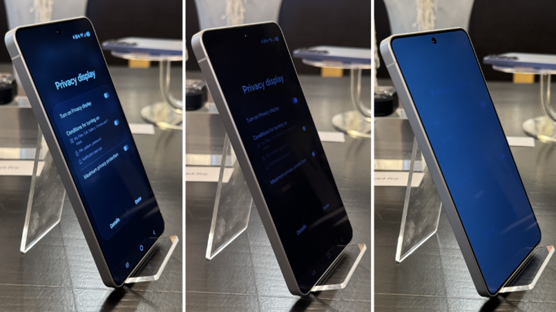
Samsung: ¿El fin de las micas de privacidad?
Samsung sacó una pantalla que actúa como mica de privacidad: el contenido solo se ve claramente de frente; desde un costado se oscurece o se vuelve ilegible.
Combina capas ópticas con ajustes de software para activar o desactivar la función.
DEPENDE DEL ÁNGULO
Editado por: Omar Galaviz
Resumen y noticias — Feb & Mar 2026
A veces suceden tantas cosas que nos olvidamos de todo lo que sucede…
Febrero 2026
Marzo 2026
Datos curiosos de México
Nuestra hermosa bandera
La bandera de México fue escogida como la más bella del mundo en una encuesta de "El Diario" en 2008.
Pequeño gran presidente
Se dice que Benito Juárez medía tan solo 1.37 m (7 cm más que un pingüino emperador), uno de los presidentes más pequeños.
Un largo mandato
Pedro Lascuráin fue presidente de México por tan solo 45 minutos en 1913, el más corto de la historia.
Consejos de otra vida
Francisco I Madero practicaba sesiones espiritistas en las que supuestamente recibía mensajes como "guía" durante su gobierno.
Xhunca & LeonCIO
En el Colegio Inglés del Occidente existen 2 mascotas. La más conocida es el león LeonCIO (nombre ganador de un concurso). Pero no podemos olvidarnos de Xhunca, el bulldog inglés que llegó con 2 meses a la escuela para calmar a los niños y traer felicidad.
Un día los niños de primaria hicieron un picnic, se pararon a jugar y cuando regresaron Xhunca se había comido toda la comida. 🐶
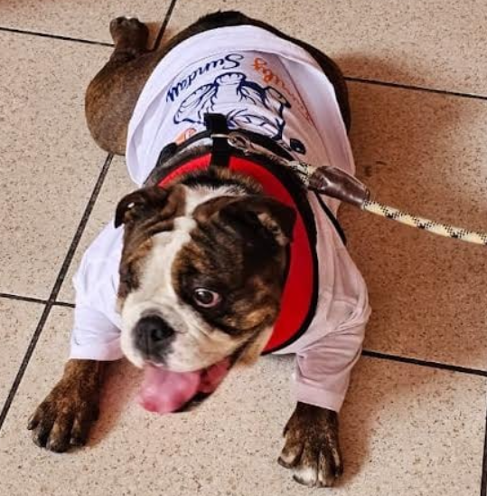
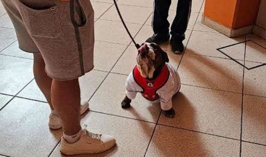
Inseguridad en el Ranchito (Tepic)
«La pérdida de uno, significó el fin para muchos»
Nos quejabamos que no pasaba nada, pero ahora lo extrañamos
El pasado domingo 22 de febrero en Tepic, Nayarit, empezó como una mañana común, pero todo se vio interrumpido tras confirmarse la caída de una persona importante en un grupo de delincuencia, que empezó a aterrorizar las calles con bloqueos, robos y amenazas.
A raíz de esto decidimos adentrarnos en las opiniones de los adolescentes de secundaria del CIO.
"No somos adultos, pero entendemos como uno."
"Que está muy bonito, tiene mucha cultura y diversidad, únicamente su punto débil es la delincuencia y la corrupción."
– Ian Sainz, 2B secundaria.
"Afuera de La Loma en un partido, nos sacaron de ahí y en el camino vi gente irse y las calles solas en silencio."
– Joseph Aguirre, 2B secundaria.
"Noticieros y redes sociales."
– Melani García, 2B secundaria.
"Mal, tristeza e inseguridad porque puede ser algo nuevo."
– Heidy Silva, 2A secundaria.
"“Poner más seguridad”
– Melani Silva
"Poniendo campañas para no apoyar a la delincuencia"
– Ian Sainz, 2b secundaria.
“Si, no ser como ellos”
– Fabiola Montalvo
“No, porque están buscando seguir con la situación”
– Heidy Silva, 2A secundaria.
Las cosas típicas de la escuela han cambiado mucho
Entrevistamos a alumnos del CIO y a sus maestros para ver sus distintas perspectivas.
Antes
Rituales para antes del examen
Temario pequeño, comer almendras y azúcar, volado, tarjetas, persignarse y notas.
Cómo justificar una falta
Se cruzaba con una clase extra, me enfermé y salí de la ciudad.
Temas para distraer al maestro
Anécdotas referentes al tema, cómo estuvo su fin de semana, si quiere tostitos y si tiene mascotas.
Excusas para puntos extras
Llevarle un dulce o un refresco, participar o trabajo extra.
Ahora
Rituales para antes del examen
Hacerse trenzas, manifestar, rezar y pegarse cabeza con cabeza.
Cómo justificar una falta
Tráfico, un familiar en el hospital, enfermedad, quedarse dormido o partidos.
Temas para distraer al maestro
Preguntas de política, materia favorita, cómo se siente, cómo está su familia y cuánto tiempo lleva dando clases.
Excusas para puntos extras
Limpiarle el salón, llorarle, rogarle, decir que prestas atención y trabajo extra.
Frankenstein — Guillermo del Toro
Cercana la premiación de los Oscars, uno de los más nominados es el director originario de Guadalajara Guillermo del Toro.
En Frankenstein se cuenta la historia del doctor Víctor Frankenstein que, tras la dolorosa muerte de su madre, decide traer a la vida a una criatura compuesta de diferentes cuerpos.
La criatura llena de rencor persigue a Víctor por años. Logra escapar, aprende a leer y escribir con un anciano, y luego pide a Víctor una compañera — petición que desencadena una tragedia.
El filme es una obra maestra visual con el estilo oscuro característico de Guillermo: patrones únicos y vestuarios que cuentan la historia. Un gran trabajo artístico y técnico digno de sus nominaciones.
Por: Aylene Bernal
FRANKENSTEIN
Guillermo del Toro
Director originario de Guadalajara · Ganador de tres Oscars
"Nos enseña a empatizar, no juzgar las apariencias, a perdonar y a ver que lo más importante de nosotros es nuestra alma."
Netflix · In Select Cinemas
Completa la sopa de letras
Cosas que encuentras en la escuela.
LÁPIZ / CUADERNO / PIZARRON / PLUMA / COMPUTADORA / MESA / MAESTROS / COMPAÑEROS / CALCULADORA / SACAPUNTAS
Por: Isaac Partida
Completa el crucigrama
Nombres de docentes
Por: Isaac Partida
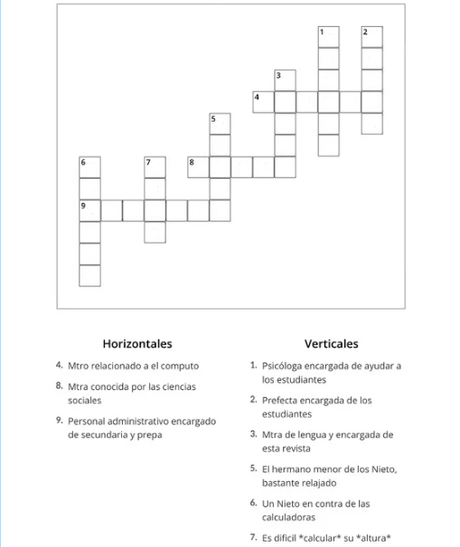
Respuestas de ambas:
Cosas que encuentras en la escuela
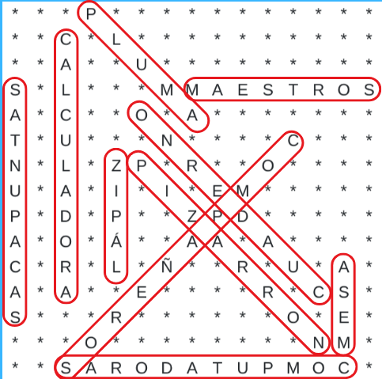
Nombres de docentes
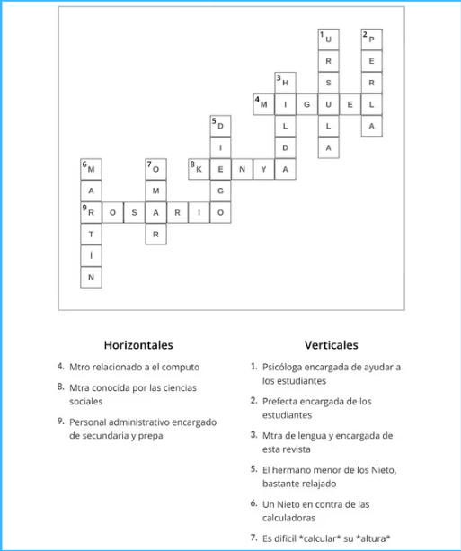